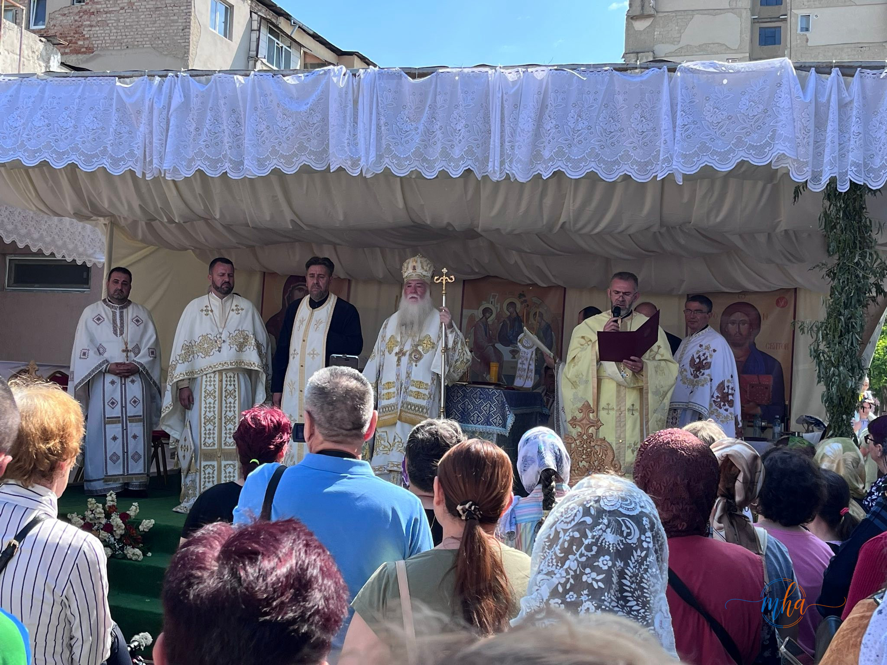
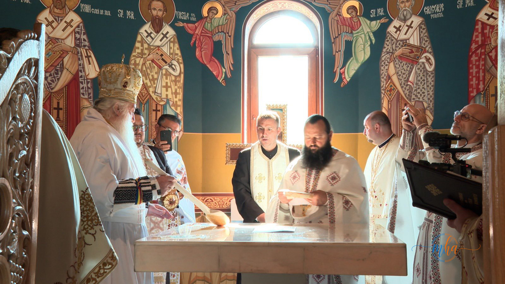
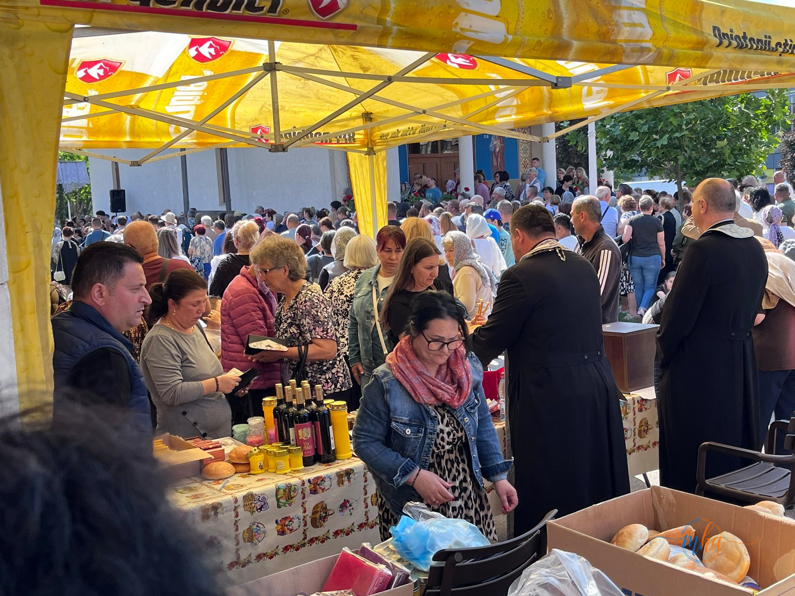

Duminică, 24 mai 2026, va rămâne o zi de referință pentru comunitatea din cartierul CET al municipiului Drobeta-Turnu Severin. După ani de rugăciune, efort și implicare colectivă, biserica cu hramul „Sfinții Împărați Constantin și Elena" a fost sfințită în cadrul unei ceremonii solemne oficiate de Preasfințitul Părinte Nicodim, Episcopul Severinului și Strehaiei, împreună cu un ales sobor de preoți și diaconi.
Încă de la primele ore ale dimineții, numeroși credincioși au participat la acest moment cu profundă încărcătură spirituală. Programul liturgic a debutat la ora 8:30 cu slujba de târnosire a noului locaș de cult, urmată de săvârșirea Sfintei Liturghii.
⛪ Date despre noua biserică
- Hram: Sfinții Împărați Constantin și Elena (21 mai)
- Locație: Cartierul CET, municipiul Drobeta-Turnu Severin
- Perioadă construcție: 2011–2019 (8 ani de lucrări)
- Paroh coordonator: Părintele Teiș Dumitru
- Ceremonie de sfințire: 24 mai 2026, ora 8:30
- Oficiant: PS Nicodim, Episcopul Severinului și Strehaiei
Opt ani de construcție — o comunitate unită în credință
Ridicată în perioada 2011–2019, noua biserică reprezintă împlinirea unui proiect construit cu răbdare și credință, sub coordonarea și purtarea de grijă a părintelui paroh Teiș Dumitru. De-a lungul celor opt ani de lucrări, autoritățile centrale și locale, binefăcători din parohie și din afara acesteia, precum și numeroși credincioși au contribuit prin sprijin material, muncă și rugăciune la edificarea noului sfânt locaș.


Cuvântul părintelui paroh — recunoștință și mulțumire
„Mulțumiri tuturor celor care au sprijinit această lucrare, îmi exprim recunoștința față de domnul Mihai și Anca Stănișoară, față de Primăria Drobeta și autoritățile județene, față de binefăctori, credincioși și față de Preasfințitul Părinte Nicodim pentru susținerea acordată pe parcursul întregului demers pastoral și administrativ."
Cuvintele părintelui Teiș Dumitru au evidențiat dimensiunea profund comunitară a acestui proiect. Construirea unui locaș de cult nu este niciodată opera unui singur om — ea este rodul unei întregi comunități care a ales să se unească în jurul valorilor credinței și ale solidarității. Recunoștința exprimată față de binefăcătorii din parohie și din afara ei, față de autoritățile locale și față de ierarhia Bisericii a subliniat că această biruință duhovnicească aparține tuturor.
Mesajul Episcopului Nicodim
La rândul său, Preasfințitul Părinte Nicodim a evidențiat semnificația duhovnicească a acestui moment și a vorbit despre modelul oferit de Sfinții Împărați Constantin și Elena în istoria Bisericii, subliniind rolul lor esențial în apărarea și răspândirea credinței creștine. Sfântul Împărat Constantin cel Mare a emis Edictul de la Milano în 313 d.Hr., punând capăt persecuțiilor împotriva creștinilor și recunoscând libertatea religioasă în Imperiul Roman — un act cu consecințe istorice profunde pentru creștinătatea universală.
„Vă îndemn pe cei prezenți să păstrați vie credința și să urmați exemplul de statornicie, jertfelnicie și mărturisire lăsat de ocrotitorii spirituali ai bisericii."
Zi de sărbătoare în cartierul CET

Foto: Sute de credincioși au participat la agapa frățească organizată în curtea bisericii, la finalul ceremoniei de sfințire
Ziua sfințirii a fost una de adevărată sărbătoare pentru întreaga comunitate din cartierul CET. După slujbă, credincioșii s-au reunit la o agapă frățească organizată în curtea noii biserici, unde au împărțit pâine și bucurie. Momentele de comuniune frățească de după slujbă au reprezentat un simbol al unității și al spiritului de comunitate care a stat la baza întregului proiect de construcție.
Pentru comunitatea din CET, această zi nu marchează doar sfințirea unei biserici, ci începutul unui nou capitol spiritual și comunitar, zidit pe credință, unitate și speranță. Noul locaș de cult va fi de acum înainte centrul vieții spirituale a parohiei și un reper al identității creștine a cartierului.